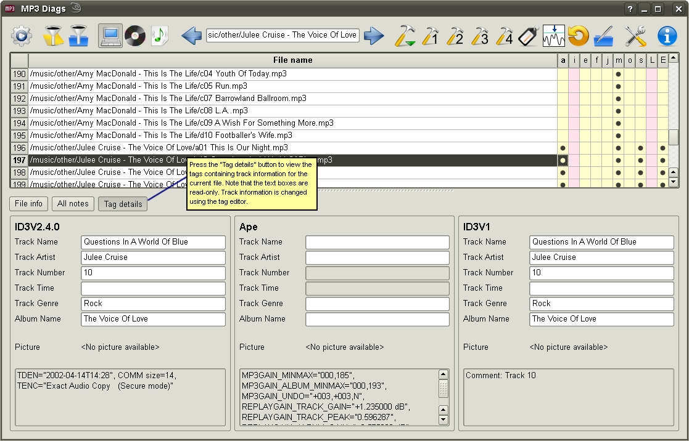

The screenshots are slightly out of date, because they still shows 1-letter labels instead of the 2-letter labels that are used now. Background colors have have been changed as well. However, these shouldn't matter much, so I'm postponing taking new screenshots until I'm done with the UI changes.
Here you can see more details about the tags in the current file. Some of the fields / frames can also be seen in the tag editor, but for the others this is the only place where you can see them. The UI needs improvements; for now, the known fields / frames are shown in the upper part (as "Track Name", "Track Artist", ...) while the ones that the tag editor doesn't use are listed in the lower part. (In this example, the TDEN, COMM, and TENC frames in the ID3V2.4.0 tag are ignored by the tag editor, and therefore they are shown in the lower part.)